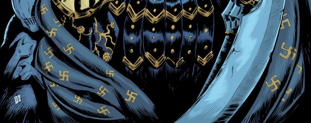
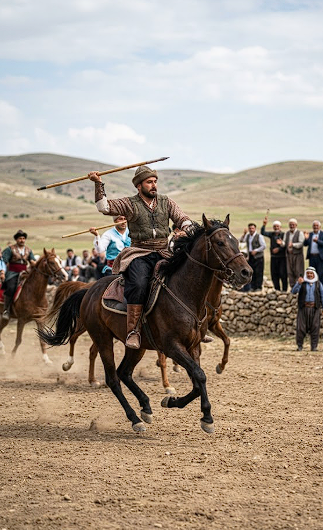

MANGALA
Oyuncular, önlerindeki altışar kuyuda bulunan dörder taşı (toplam 48 taş), saat yönünün tersine her kuyuya birer tane bırakarak dağıtırlar; son taşın kendi "hazinesine" gelmesi oyuncuya bir hamle hakkı daha kazandırır. Temel amaç, kendi sağındaki büyük hazinede en çok taşı biriktirmektir; bunu yaparken taşları çiftleyerek rakip kuyusundan taş alma veya kendi boş kuyusuna son taşı düşürerek karşıdaki taşları "avlama" gibi taktikler kullanılır. Taşların tamamı bittiğinde hazinesinde en çok taşı olan oyuncu seti kazanmış olur.
STRATEJİ
CİRİT
Oyun alanında at koşturan sporcu, rakip takımdan birine yaklaşarak elindeki ciriti fırlatır ve hızla kendi sahasına geri dönmeye çalışırken; rakibi de fırlatılan ciriti havada yakalamaya veya karşı atakla karşılık vermeye çalışır. Puanlama; isabetli atışlar, fırlatılan ciriti havada yakalama veya rakibi pes ettirme gibi teknik beceriler üzerinden yapılırken, atın sağlığına zarar vermek veya rakibe çok yakından cirit atmak gibi centilmenlik dışı hareketler ceza puanı getirir. Oyun, at ile binicinin kusursuz uyumunu ve yüksek düzeyde stratejik manevra kabiliyetini gerektiren heyecan dolu bir disiplindir.
ATLI SPOR
GÖKBÖRÜ
Oyunun temel amacı, kesilmiş bir oğlak veya teke gövdesini (günümüzde bazen imitasyon kullanılır) yerden kapıp, rakiplere kaptırmadan belirlenen hedef alanına veya "adalet kuyusuna" bırakmaktır. Atlılar, toz duman içerisinde hem atlarını ustalıkla yönlendirmek hem de fiziksel güçlerini kullanarak postu rakiplerinden çekip almak zorundadır. Takım çalışması, denge ve yüksek kondisyon gerektiren bu oyun, bozkır kültürünün savaşçı ruhunu yaşatan en etkileyici geleneksel sporlardan biridir.
MÜCADELE
MATRAK
Oyuncular, sağ ellerinde ucu keçe ile kaplı deri bir lobut (matrak), sol ellerinde ise kendilerini korumak için yumuşak bir kalkan (yastık) tutarlar. Oyunun temel amacı, rakibin kafasına veya vücuduna matrakla hafifçe vurarak puan kazanmak, aynı zamanda kalkanla gelen darbeleri ustalıkla savuşturmaktır. Son derece hızlı hareket etmeyi gerektiren bu oyun, vuruş sonrası "Matrak!" diye bağıran tarafın rakibinden "Eyvallah" cevabını almasıyla devam eden, centilmenliğin ve çevikliğin ön planda olduğu bir disiplindir.
SAVUNMA
AŞIK OYUNU
Genellikle yere çizilen bir dairenin ortasına dizilen aşıkların, "sakalar" adı verilen daha ağır ve doldurulmuş ana kemiklerle daire dışına atılması hedeflenir. Kemiklerin yere düştüğünde aldığı "çık", "pık", "han" veya "bey" gibi isimlerle anılan yüzey pozisyonlarına göre puan kazanılır veya hamle sırası belirlenir. Strateji ve ustalığın ön planda olduğu bu oyun, geçmişten günümüze Türk dünyasında toplumsal kaynaşmanın ve çocukluk kültürünün vazgeçilmez bir parçası olmuştur.
BECERİ
DOKUZ TAŞ
Oyuncular, iç içe geçmiş üç kareden oluşan oyun tahtasındaki kesişim noktalarına taşlarını sırayla yerleştirirler; temel amaç, aynı çizgi üzerinde üç taşı yan yana getirerek bir "per" (veya cız) oluşturmaktır. Üçlü yapan oyuncu, rakibinin tahtadaki taşlarından birini oyun dışına çıkarma hakkı kazanır. Tüm taşlar yerleştirildikten sonra taşlar boş komşu noktalara hareket ettirilerek oyun devam eder ve rakibini iki taşa düşüren veya hareket edemeyecek şekilde sıkıştıran taraf galip gelir.
ZEKA
ÇELİK ÇOMAK
Biri uzun (çomak) diğeri kısa (çelik) iki sopa kullanılarak açık alanlarda oynanan, koordinasyon ve güç gerektiren geleneksel bir oyundur. Oyun, yerdeki küçük bir çukura veya iki taşın üzerine yatay konulan "çelik" parçasının, uzun sopa yardımıyla havaya fırlatılıp ardından hızla vurularak en uzak noktaya gönderilmesi esasına dayanır. Rakip takım, havaya atılan çeliği yere düşmeden yakalamaya çalışır; eğer yakalayamazlarsa, çeliğin düştüğü yer ile başlangıç noktası arasındaki mesafe "çomak" boyuyla ölçülerek puan kazanılır. Odaklanma ve zamanlama gerektiren bu oyun, geniş alanlarda grup halinde oynanan en eğlenceli eski sokak sporlarından biridir.
KOORDİNASYON
YAĞLI GÜREŞ
Yağ nedeniyle rakiplerin birbirini tutması oldukça zorlaştığından, oyunun temel amacı teknik beceriyi kullanarak rakibin sırtını yere getirmek veya onu oyun dışı bırakacak hamleleri gerçekleştirmektir. Davul ve zurna eşliğinde, dualarla başlayan müsabakalarda pehlivanlar; elense, tırpan ve paça kazığı gibi özel tekniklerle birbirlerini alt etmeye çalışırlar. Her yıl düzenlenen Tarihi Kırkpınar Yağlı Güreşleri ile sembolleşen bu spor, sadece fiziksel bir mücadele değil, aynı zamanda saygı ve gelenek üzerine kurulu bir "pehlivanlık" kültürüdür.
ATA SPORU
TEPÜK
Kaşgarlı Mahmud’un Dîvânu Lugâti't-Türk adlı eserinde de detaylıca tarif edilen bu oyunda; içi hava, yün veya keçe ile doldurulmuş deri toplar kullanılır ve oyuncular topa sadece ayaklarıyla vurarak rakip kaleye veya belirlenen hedefe ulaştırmaya çalışırlar. Sertlikten ziyade çeviklik ve ayak becerisinin ön planda olduğu Tepük, Orta Asya bozkırlarında askeri eğitimi destekleyen bir antrenman ve sosyal bir eğlence aracı olarak yüzyıllarca varlığını sürdürmüştür.
AYAK TOPU
OKÇULUK
Türk kültüründe hem bir savaş sanatı hem de ruhsal bir disiplin olarak kabul edilen, yayın gerilip okun belirli bir hedefe en isabetli şekilde fırlatılması esasına dayanan kadim bir spordur. Geleneksel Türk okçuluğunda, kompozit yapılı "müreccep" yaylar ve "zihgir" adı verilen başparmak yüzüğü kullanılarak, at üzerinde veya yaya olarak hedefler vurulur. Oyun; menzil atışları (oku en uzağa atma) veya darp atışları (sert hedefleri delme) gibi farklı disiplinlere ayrılırken, her atıştan önce odaklanma, nefes kontrolü ve sükunet ön planda tutulur. Sadece fiziksel güç değil, aynı zamanda yüksek bir zihinsel disiplin gerektiren bu spor, "Ya Hak!" nidasıyla başlayan derin bir manevi mirası günümüze taşır.
ASKERİ SANAT
TOMBA
Anadolu'nun bazı yörelerinde "çizgi" veya "seksek" oyununa benzer şekilde, ancak daha çok hedef vurma ve strateji odaklı oynanan geleneksel bir sokak oyunudur. Oyuncular yere iç içe geçmiş kareler veya dairesel alanlar çizerler ve temel amaç, eldeki yassı bir taşı (kiremit parçası veya düz taş) bu alanların içine, çizgilere değdirmeden sırayla isabet ettirmektir. Bazı varyasyonlarında, hedefe atılan taşın ardından tek ayak üzerinde zıplayarak taşı geri alma veya rakip taşları alanın dışına itme gibi kurallar da bulunur. Hem denge hem de mesafe tayini yeteneğini geliştiren bu oyun, sınırlı ekipmanla her yerde oynanabilen kolektif bir eğlence biçimidir.
EĞLENCE
KUŞAK GÜREŞİ
Kırım Türkleri ve Tatar kökenli vatandaşlar arasında bir gelenek olan, pehlivanların bellerine bağladıkları özel dokuma kuşaklardan tutarak birbirlerini alt etmeye çalıştıkları bir spor dalıdır. Oyunun temel kuralı, güreş süresince rakibin kuşağını kesinlikle bırakmamak ve yapılan teknik hamlelerle rakibin iki omzunu aynı anda yere getirerek galip gelmektir. Genellikle düğün, bayram ve "Tepreş" gibi şenliklerde davul zurna eşliğinde yapılan bu güreş, bacak ve bel gücünün yanı sıra hızlı manevra kabiliyeti gerektirir. Sertlikten ziyade çeviklik ve saygının ön planda olduğu Kuşak Güreşi, Türklerin Orta Asya'dan Balkanlar'a taşıdığı en köklü "minder dışı" güreş türlerinden biridir.
GÜREŞ